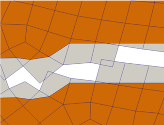
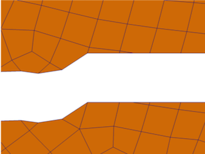

The MOOSE XFEM implementation uses the phantom node technique, in which elements traversed by a discontinuity are split into two partial elements, each containing physical and non-physical material.
This code generates two sets of elemental variables: `xfem_cut_origin_[0-2]` and `xfem_cut_normal_[0-2]`, which define the origin and normal of a cutting plane to be applied to each partial element. If these both contain nonzero values, this filter will cut off the non-physical portions of those elements.
It is necessary to define the cut planes in this way rather than using a global signed distance function because a global signed distance function has ambiguities at crack tips, where two partial elements share a common edge or face.
The following two images show the mesh before and after the clipping process, with the physical portions of the domain shown in orange and the non-physical portions shown in grey before clipping:
 
To correctly visualize the results on a mesh with magnified deformation, apply the "Warp" filter after applying this filter.